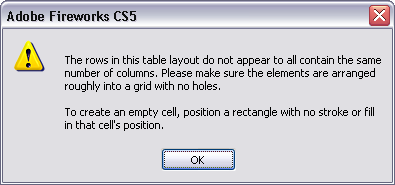
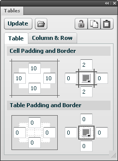
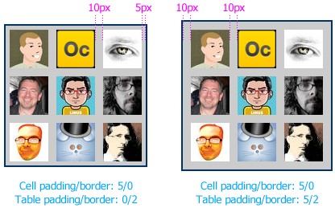
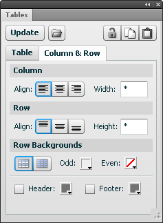
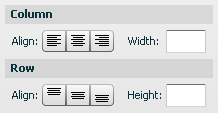
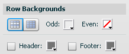
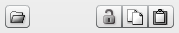
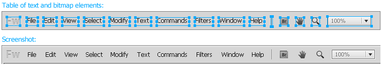

fireworks
Tables
The Tables panel enables you to quickly mock up HTML-style tables without having to laboriously position each cell or border. Although it's relatively straightforward to arrange elements in a grid using Fireworks' alignment and distribution commands, as soon as the table contents change you'll need to reposition everything manually. The Tables panel automates this tedious process.
Unlike the table functionality in an app like Dreamweaver, you don't need to enter each cell's text or graphics into a special table UI. Instead, you use the standard Fireworks tools to create and edit the contents of the table cells. The Tables panel is used only to specify the layout parameters and to automatically add and position cell backgrounds or borders.
Contents
- Creating a table
- Editing a table
- Table tab
- Column & Row tab
- Toolbar buttons
- Table commands
- Other uses
- Limitations
- Implementation notes
Creating a table
To make a new table, create some text or graphical elements and arrange them into a rough grid. It's okay if the columns or rows overlap a bit. Select the elements that form the table and then open the Tables panel from the Windows menu. All the controls in the panel except the Create button will be disabled, so click that button. The selected elements will then be arranged into a precise table layout, with some default padding and borders applied.
The elements that represent the cell borders and backgrounds of the table are inserted automatically when the table is created or updated. These background elements are combined into a group called Table Background that is pushed to the bottom of the layer and then locked. This makes it easy to select the table cell elements without accidentally selecting the background. This group is recreated automatically whenever you modify the table and click Update.
There are a few rules to keep in mind when creating tables:
Each element on a layer represents a cell in the table
The Tables panel organizes each table into its own layer or sub-layer. When you select some elements and then click the Create button, the selected elements will be moved to their own new layer, with the same parent as the current layer. The new layer will be positioned just above the current one and will be named "Table" (though feel free to rename it). If you select just one element and then click Create, the panel will treat every element on the current layer as part of the table.
If you create some new elements on a layer that already contains a table and then click the panel's Update button, the new elements will be added to the existing table.
Each table cell must contain exactly one element (even apparently empty cells)
There must be exactly one element for each cell in the table layout. For instance, if the Tables panel infers 4 columns and 3 rows from your table layout, then there must be 12 elements on the layer. If you want to include more than one element in a cell, e.g., an icon and its label, then you must group the elements together. Any number of elements can be contained in the group.
If you want the table to contain an empty cell, simply create a rectangle with no fill or stroke and position it where the empty cell should appear. Each empty cell needs its own placeholder.
Note that currently there is no way for a cell to span multiple columns or rows.
The table's column and row structure is inferred from the layout of the elements
When you click the Create button, the Tables panel scans the positions of the selected elements and tries to figure out the intended column and row structure. The elements don't have to be precisely laid out, but they should fit a rough grid pattern. Most importantly, elements in each column should be roughly aligned vertically and not overlap too much with the columns on either side.
If the panel cannot figure out the structure of your table, it will show a warning:

Often this is caused by a missing empty cell placeholder or a placeholder that doesn't line up vertically with the other cells in its column or row.
This layout inference also happens each time you click the Update button. So after you create a table, you can change an element's position to move it to a different row or column. The panel will move the other elements to accommodate the new position of the moved element, ensuring that each cell and border is placed correctly.
The default column alignment is determined by the alignment of text elements in the first row
If the first row of your table includes text elements, the alignment of those elements will determine the alignment of their columns. For instance, if the first text element in the row is center-aligned, then the elements in the first column will be centered beneath that text block. You can later adjust the column alignment in the Column & Row tab of the Tables panel.
Note that text elements are always converted to "area text", which wraps to the text block's width, as opposed to "point text", which is on a single line. This is necessary because text cells are resized to fit the width of their column. You may see point text elements shift a couple pixels vertically when they're converted to area text.
The table's style is stored on each cell
The values of the table's padding, border colors, background, etc. are stored on each cell element. So if you copy a part of the table to another page or document, the copy will maintain the original table's style.
Editing a table
Once you've created a table, you'll likely want to modify some of its attributes, such as the border widths, background colors, and so on. You may also need to edit the contents of the cells, or add or remove columns and rows.
The elements that make up the table cells can be manipulated with the standard Fireworks tools and panels. So if you need to, say, change a text block's font size, just go ahead and change it in the Properties panel.
If the size or position of any elements changes, the layout of the table won't look right, so just select one of the elements in the table and click Update to cause the panel to re-layout the cells to account for their new sizes.
When a numeric field in the panel has keyboard focus, you can press return to immediately update the table with the current settings. This can be more convenient than having to click Update after each change.
There are a few points to remember while editing tables:
The settings shown in the Tables panel are those stored on the topmost selected cell
Selecting just one cell is usually sufficient when editing a table. If you make a change to a control on the Table tab and click Update, that will be applied to every cell in the table. If you change something on the Column & Row tab, the change will be applied to the other cells in the selected cell's column and row.
If more than one cell is selected, then the stored style from the cell that is topmost in the layer stack is displayed in the panel. Usually every cell in the table stores the same table settings, but if you combine cells from different tables, this may not be true. When combining different tables, select a cell that has the correct style and click Update to force all the cells in the table to store the same settings.
Adding or removing rows and columns
Use the standard Fireworks tools to add or remove elements on the layer that contains your table. It's often convenient to duplicate an existing column or row and then modify the duplicated cells.
When removing a column or row, don't worry about the hole that's left after you delete the cells. Just select another cell in the table and click Update to force the table to close the gap.
Make sure any elements you add to the table are on the same layer. Otherwise, the new elements won't be included in the table.
The position of the table is defined by its top-left cell
The table cells are laid out in relation to the top-left cell. If you move this cell without moving the others and then click Update, the rest of the cells will move to the new position.
If you move the cell too far, of course, it may end up in a different column or row, so when making large moves, it's best to select all the cells and move them. The locked fill and border elements will be left behind, but clicking Update again will redraw them in the correct location.
Border and fill colors can be edited manually
The panel creates the table borders and background fills by inserting and positioning rectangle elements behind the cells (the borders are made from rectangles, not lines). The background elements are grouped together and then locked, so that you don't accidentally select them.
If you want to edit the background elements, you can unlock the Table Background group at the bottom of the table's layer. Then use the sub-select tool to select the borders or fills you want to modify, such as by changing their fill color.
Note that any changes you make will be wiped out the next time you update the table via the panel, so be sure you're done editing the table before making manual changes to the background elements.
Table tab

Cell Padding and Border
The Tables tab in the panel controls the padding and border values. In the Cell Padding and Border section, the first group of 4 numeric fields lets you specify how much padding should be around the top, right, bottom and left sides of each cell.
The next group of fields controls the width of the top, right, bottom and left borders around each cell, in pixels. The borders behave similarly to an HTML table with the border-collapse CSS style set to collapse. This means that the widest border wins, so if the left border size is, say, 2 and the right border is 4, then the vertical borders between columns will be 4px wide. Only the border on the left edge of the table will be 2px, since there's no right border there to override it. (There's no way to simulate a table with border-collapse set to separate.)
The color picker in the middle of these 4 fields controls the color of the cell borders, all of which have the same color.
Table Padding and Border
This section controls the padding and border around the table as a whole. HTML doesn't really have a concept of table padding, but it can be quite useful in certain situations. For instance, you may want to lay out elements in a grid with an even 10px between them, along with another 10px between the outermost elements and a border around the table. There's no way to achieve this without table padding, since setting the padding on each side of a cell to 5 will put the desired 10px of space between cells, but only 5px of padding along the edges of the table:

The table border controls work similarly to the cell controls described above. Note that the cell border color will be used instead of the table border color if both borders have the same width, which is also how HTML handles this situation.
Column & Row tab

Alignment
The button bars on the left let you specify the alignment of the columns and rows that contain the selected elements. Columns can be horizontally aligned left, center or right, and rows can be vertically aligned top, middle or bottom.
If the selected cells are in more than two columns, one left-aligned, say, and one right-aligned, then these button bars will not show a selection. As long you don't click one of the buttons, the columns' alignment will not change when you click Update. However, if you select the center alignment option, say, and click Update, then both columns will be center-aligned.
A text element's horizontal alignment is automatically changed to match the alignment of the column that contains it.
Sizing
The text fields on the right of the panel let you specify the selected column's width or the row's height. By default, columns and rows are sized to be just big enough to contain their widest or tallest cells. This auto-sizing is represented by a * in the size field. If you want to specify a minimum column width or row height, enter it in pixels. Text elements will be resized to fit the column width, but other elements are not, so if a 200px-wide image is placed in a column whose size has been set to 100px, the image will force the column to be 200px wide (unless the column contains an even wider element, of course).
To restore the automatic sizing behavior to a column or row, just enter a * in the field. Note that padding and border widths are not counted in these sizes.
When the selected columns or rows have different sizes, the field will be blank to indicate a mix of sizes:

Row Backgrounds

This section controls the background colors of the table's rows. The first toggle button specifies whether row colors should alternate or whether the whole table should have a single color. Next to that are two color pickers, one for odd-numbered rows (1, 3, 5, etc.) and one for even-numbered ones (2, 4, 6, etc.). The even-numbered picker is disabled when a single color is used for the whole table.
If you want no fill at all in the table, select the single-color option and then click the transparency button in the color picker.
You can also choose to use a different color for the first and/or last row in the table. Just click the Header or Footer checkbox and pick a color.
Toolbar buttons

Insert a table from a text file
Just to the right of the Create/Update button is a button that lets you insert a table from a tab-delimited or comma-separated text file. Click it to open a file chooser where you can select the file. Although files of all types are shown in the chooser, only files with .txt or .csv extensions can be read by the Tables panel. After you select the file and click Open, the contents of the table will be inserted at the upper-left corner of the document, on a new layer named after the file. You can then drag the table elements to a new position.
Since only text files are supported, the table will be inserted with the default style, but you can use the Tables panel to format it.
To import a table from a webpage, you'll need to first convert it to tab-delimited or CSV format. Microsoft Excel actually does a pretty good job of converting a table copied from Internet Explorer, while HTML copied from other browsers doesn't seem to work very well. After pasting the table into Excel, save it in .txt or .csv format. Remember that Excel's default .xls format is not supported.
Note that large tables may take some time to import and style, and the Tables panel may give up trying to process tables with many hundreds of cells. In that case, the best approach would be to break the table down into smaller units and then position the individual tables next to each other to form a larger one.
Unlock background
The first button on the toolbar in the upper-right of the Tables panel toggles the locked state of the table's background. When a table's layout is updated, the group containing the table's fill and border elements is locked at the bottom of the layer, making it easier to manipulate the cells without accidentally selecting the background.
When moving the table, though, you may want to move the background as well, or you may want to delete both the table cells and the background. Clicking the unlock button will unlock the background element and select it along with all the cells in the table. You can then move the entire table to a new location. If you want to re-lock the background element, just click the button again. The table cells will remain selected, but the background will be locked.
Copy/paste table settings
The next two buttons in the toolbar let you copy and paste the settings from one table to another. Just select a cell in the first table, click the copy button, then select a cell in the second table and click the paste button. The first table's settings will be applied to the second's, which is then automatically updated.
The settings of the last table you update are always copied to the clipboard and are used as the defaults for the next table you create or insert. These settings are also remembered across Fireworks sessions.
Tables commands
The Commands > Tables sub-menu lists commands that offer some of the same functionality that is provided by the panel. You may find it convenient to set a keyboard shortcut to the Tables > Update command so that you can update the selected table without having to click in the panel. Or you could create shortcuts for copying and pasting table styles if you're managing a lot of tables.
Other uses
While the primary use of this panel is obviously to create HTML-style tables, it can also be useful for creating other types of layouts where elements are spaced evenly. For instance, a toolbar typically contains icons, buttons, menus and other controls evenly spaced in a single row. If the toolbar elements change width, or new ones are inserted, rearranging everything can be a bit of a pain, but the Tables panel will make quick work of it. Here's a table-based mockup of the Fireworks menubar, next to a screenshot of the actual menubar:

A vertical or horizontal nav bar is another common interface component that the Tables panel can help lay out. Or a blockquote with an outline drawn around it. That's easy to create once, but when the text changes you have to adjust the border, whereas a table containing a single cell of text would do that for you. Basically, any set of elements that you want to position in a grid based on the size of the individual elements is a job for the Tables panel.
Limitations
As stupendously awesome as the Tables panel may be, it does have a number of limitations:
- Cells can't span multiple rows or columns.
- Individual cells can't have different borders, fills or padding from the rest of the table.
- All cell borders have to be the same color, as do all table borders.
- Nested tables are not supported (though you can sort of fake it by putting an empty rectangle in the parent table where the nested one is supposed to be and then manually positioning the nested one there).
- The tables cannot be exported as HTML markup.
Some of these limitations may be addressed in future releases, but hopefully the Tables panel is useful enough in its current incarnation to include as part of your Fireworks workflow.
Also note that the Tables panel requires Fireworks CS4 or later. You can install the .mxp package for CS5 simply by clicking the Download link above. To use the panel with CS4, you'll need to click the .zip link instead and then install the files manually by unzipping the archive.
Implementation notes
The Tables panel was created using the JSML Panel library, which lets you compose a Flex user interface with JavaScript instead of ActionScript. Dave Hogue first inspired (demanded? :) the creation of the extension, and helped improve its UI design. Thanks also to the folks who helped beta test early versions of the panel.
Release history
- 1.0.3
- 2012-10-09: Bug fix to correctly handle number values in an imported .csv file.
- 1.0.2
- 2011-04-16: Minor update to make the Tables panel compatible with the Multi-Border Rectangle auto shape.
- 1.0.1
- 2011-03-26: Minor update to require Fireworks CS5 for installation of the .mxp package. No change in functionality.
- 1.0.0
- 2011-03-23: Initial release.
Package contents
- Tables
- Insert Table From Text File
- Table Style - Copy
- Table Style - Paste
- Unlock Background
- Update